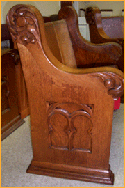
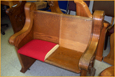

Our scope of service includes your flooring needs. We offer a full line of flooring that includes VCT, vinyl, tile, carpet, and hardwood flooring. We have a number of designs and colors to meet your decorative needs. Each of these areas has several options with degrees of pricing. All are higher quality from manufacturers like Shaw, Bigelow, Karastan, Philadelphia, and Mohawk. We also have Azrock V, VCT and Mannington Vinyl and several other brands. We have a complete line of hardwood flooring from BLC Hardwoods, Shaw, and Appalachian real hardwood floors. We have a showroom reflecting many flooring options.
 Our services also include the capacity to help churches and county courtrooms that might want to consider the alternative of refinishing, upholstering or reupholstering their existing pews and chairs in lieu of new furniture. If the existing furniture is structurally sound, then this option is less expensive while still achieving a fresh new look for the wood. We use a professional company that specializes in church furniture and will accomplish all work in the church. This means no lost worship or court time.
When we arrive, we'll review the condition of the furniture - including any damaged wood. If damages are found, we will bring that to your attention and discuss whether we can do the repairs onsite ourselves. We will also offer pricing for those repairs.
What we see most often is a need for minor cleaning and refinishing. For these projects, we use a professional company that specializes in church furniture and will accomplish all work in the church. The process only requires a minimum amount of time for the work and drying, making for no loss of use or delay for holding worship services.
Our Procedure: Our first task is to install protective coverings for the flooring. If we are to re-upholster, we'll remove the existing fabric and foam. If that is the extent of what we are to do, then we apply new foam and new fabric as agreed.
If wood restoration is desired, we'll then begin a cleaning or wipe-down of the wood surfaces. The crew will then lightly sand and clean the furniture in preparation for the application of "Restore-a-Finish". With this option, we can leave the existing stain, or remove it while sanding. This product has a unique finish-penetrating formula that restores the original color and luster to the finish while blending out scratches and blemishes. It also permanently eliminates white heat rings, water marks, scratches, color fade, oxidation, and smoke damage, and also restores the finish without removal or reapplication. For severe white rings or other deeper damage, we will apply our product with Super Fine (0000) steel wool. We will always rub with the grain of the wood. The final step is to apply Feed-N-Wax (to maintain the new restored finish) and orange oil for a beautiful shine and luster.
We do not recommend this procedure for wood floors, new imitation wood, or under polyurethane finishes as a stain.
For those historic pews or furniture, or furniture that needs to be stained a darker stain than the original, we would need to remove the furniture and transfer it to our manufacturing facilities. There, computer automated sanding and polishing equipment will prepare the woods for new stains and sealers, including the repair of any imperfections in the furniture (including cracks, splits and other deficiencies). Then, the furniture will be stained to your selected shade, and re-upholstered as required. Normally, the seat will be 3' high-density foam with any of our standard fabrics.
Reupholstering typically includes removing the existing fabric and foam from both the seat and back and from the back of the back (when applicable). We will then add 2, 3, or 4 inches of flexible polyurethane foam on the seat and 1 inch of the same foam on the back, if desired. We have a variety of fabrics for your selection. The fabric of your choice will be added to all of the upholstered areas. You will be pleased with the beautiful and comfortable result. Our work carries a 4-year warranty.
There is no commitment required for us to come with fabric samples for your committee to make their selection. While there, we will measure pews, take pictures of the furniture, and discuss options available to you.
Please click here to jump to the "Request a Catalog" Form on our contact page, or call us directly to make the request.